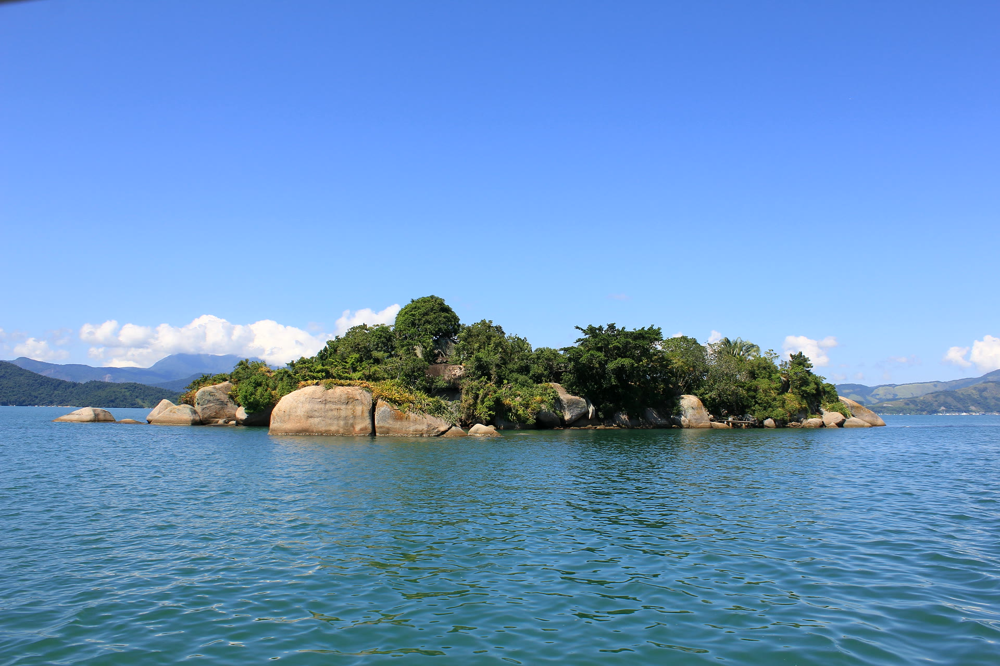

Ilha dos Cocos, Lagoa Azul & Ilha Comprida
Mergulho com snorkel entre cardumes coloridos nas piscinas naturais mais transparentes do norte da Baía de Paraty.
Ilha dos Cocos
Lagoa Azul
Ilha Comprida
Praia da Conceição
Consultar este roteiro no WhatsApp